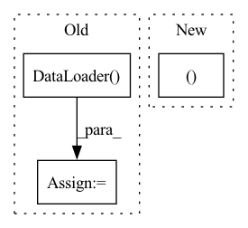

Pattern ID :31918
Before Change
test_batch_sampler = paddle.io.BatchSampler(dataset=test_ds,
batch_size=args.batch_size,
shuffle=False)
test_data_loader = paddle.io.DataLoader(
dataset=test_ds, batch_sampler=test_batch_sampler, return_list=True)
metric = SpanEvaluator()
precision, recall, f1 = evaluate(model, metric, test_data_loader)
logger.info("-----------------------------")After Change
trans_fn=trans_fn)
metric = SpanEvaluator()
precision, recall, f1 = evaluate(model, metric, test_data_loader)
logger.info("-----------------------------")
logger.info("Class Name: X的%s" % key)
logger.info("Evaluation Precision: %.5f | Recall: %.5f | F1: %.5f" %In pattern: SUPERPATTERN
Frequency: 6
Non-data size: 3
Instances Fragment ID: 93359840
Project Name: paddlepaddle/paddlenlp
Commit Name: 87613d4c2517594921dcabbfe0afd549fa05869e
Time: 2022-09-14
Author: 40840292+linjieccc@users.noreply.github.com
File Name: model_zoo/uie/evaluate.py
M Class Name: AnonimousClass
N Class Name: AnonimousClass
M Method Name: do_eval(0)
N Method Name: do_eval(0)
M Parent Class:
N Parent Class:
M File Name: model_zoo/uie/evaluate.py
N File Name: model_zoo/uie/evaluate.py
M Start Line: 68
M End Line: 84
N Start Line: 56
N End Line: 115
Before Change
// todo: add a test for the training loop
def test_dataset(create_dataset):
dataloader = torch.utils.data.DataLoader( create_dataset)
assert(next(iter(dataloader)) is not None)
images, labels = next(iter(dataloader))
assert(labels.shape == (1,34))
assert(labels.dtype == torch.float)After Change
val_dataloader = data_module.val_dataloader()
assert (next(iter(val_dataloader)) is not None)
images, labels = next(iter(val_dataloader))
assert (labels.shape == (2, 34))
assert (labels.dtype == torch.float)
assert (images.shape[0] == 2 and images.shape[1] == 3) Fragment ID: 93359841
Project Name: danbider/lightning-pose
Commit Name: e8f16a03af204c509dbf85bce9681c52f18903df
Time: 2021-05-26
Author: danbider@gmail.com
File Name: tests/test_regression_tracker.py
M Class Name: AnonimousClass
N Class Name: AnonimousClass
M Method Name: test_dataset(2)
N Method Name: test_dataset(1)
M Parent Class:
N Parent Class:
M File Name: tests/test_regression_tracker.py
N File Name: tests/test_regression_tracker.py
M Start Line: 31
M End Line: 32
N Start Line: 50
N End Line: 70
Before Change
// todo: add a test for the training loop
def test_dataset(create_dataset):
dataloader = torch.utils.data.DataLoader( create_dataset)
assert(next(iter(dataloader)) is not None)
images, labels = next(iter(dataloader))
assert(labels.shape == (1,34))
assert(labels.dtype == torch.float)After Change
val_dataloader = data_module.val_dataloader()
assert (next(iter(val_dataloader)) is not None)
images, labels = next(iter(val_dataloader))
assert (labels.shape == (2, 34))
assert (labels.dtype == torch.float)
assert (images.shape[0] == 2 and images.shape[1] == 3) Fragment ID: 93359842
Project Name: danbider/lightning-pose
Commit Name: 5a21cf27ff581153a02b846d6e5114cc3fb8f885
Time: 2021-05-26
Author: danbider@gmail.com
File Name: tests/test_regression_tracker.py
M Class Name: AnonimousClass
N Class Name: AnonimousClass
M Method Name: test_dataset(2)
N Method Name: test_dataset(1)
M Parent Class:
N Parent Class:
M File Name: tests/test_regression_tracker.py
N File Name: tests/test_regression_tracker.py
M Start Line: 31
M End Line: 32
N Start Line: 50
N End Line: 70
Before Change
trainset_1_inp = ImageDataset(root="./images_LR/input/Training1/", transform=transform)
trainset_2_inp = ImageDataset(root="./images_LR/input/Training2/", transform=transform)
train_loader_1 = torch.utils.data.DataLoader(
ConcatDataset(
trainset_1_gt,
trainset_1_inp
),
batch_size=BATCH_SIZE * GPUS_NUM, // Enlarge batch_size by a factor of len(device_ids)
shuffle=True,
)
train_loader_2 = torch.utils.data.DataLoader(
ConcatDataset(
trainset_2_gt,After Change
)
print("Finished loading dataset")
return train_loader_cross, test_loader
Fragment ID: 93359845
Project Name: mrrobot2211/pytorch-deep-photo-enhancer
Commit Name: 76112b5310dedd4d99c9338e6166615bccade671
Time: 2020-05-06
Author: felipebihaiek@gmail.com
File Name: libs/compute.py
M Class Name: AnonimousClass
N Class Name: AnonimousClass
M Method Name: data_loader_mask(0)
N Method Name: data_loader_mask(0)
M Parent Class:
N Parent Class:
M File Name: libs/compute.py
N File Name: libs/compute.py
M Start Line: 88
M End Line: 133
N Start Line: 96
N End Line: 116
Before Change
sampler=sampler,
worker_init_fn=worker_init_fn)
elif split == "val":
data_loader = torch.utils.data.DataLoader( data,
batch_size = int(cfg.TRAIN.BATCH_SIZE / cfg.NUM_GPUS),
shuffle=shuffle,
num_workers=cfg.TRAIN.NUM_DATA_WORKERS,
pin_memory=True,
sampler=sampler,
worker_init_fn=worker_init_fn
// collate_fn=collate_fn)
)
else: //test split
data_loader = torch.utils.data.DataLoader(data,
batch_size = int(cfg.TRAIN.BATCH_SIZE / cfg.NUM_GPUS),
shuffle=False,After Change
worker_init_fn=worker_init_fn
// collate_fn=collate_fn)
)
return data_loader, (data, sampler )
Fragment ID: 93359846
Project Name: rvl-lab-utoronto/video_similarity_search
Commit Name: dc4cedda6887dcaa36263307711104e84e099bd5
Time: 2020-09-15
Author: sherrychen127@gmail.com
File Name: datasets/data_loader.py
M Class Name: AnonimousClass
N Class Name: AnonimousClass
M Method Name: build_data_loader(7)
N Method Name: build_data_loader(7)
M Parent Class:
N Parent Class:
M File Name: datasets/data_loader.py
N File Name: datasets/data_loader.py
M Start Line: 195
M End Line: 245
N Start Line: 196
N End Line: 239
Before Change
testset = dataset(
root="save/data", train=False, download=False, transform=transform_test,
)
testloader = data.DataLoader(
testset, batch_size=batch_size, shuffle=False, num_workers=n_workers,
)
return trainloader, testloader
After Change
root="save/data", train=False, download=False, transform=transform_test,
)
return trainset, testset
def get_dataloader(
trainset: VisionDataset, testset: VisionDataset, batch_size: int, n_workers: int, Fragment ID: 93359847
Project Name: j-marple-dev/model_compression
Commit Name: 49fd51c06795b3b7f737f62f7e6df8f9158c8555
Time: 2020-06-30
Author: 44793742+HSShin0@users.noreply.github.com
File Name: src/utils.py
M Class Name: AnonimousClass
N Class Name: AnonimousClass
M Method Name: get_dataset(3)
N Method Name: get_dataset(5)
M Parent Class:
N Parent Class:
M File Name: src/utils.py
N File Name: src/utils.py
M Start Line: 34
M End Line: 66
N Start Line: 74
N End Line: 86